Administration
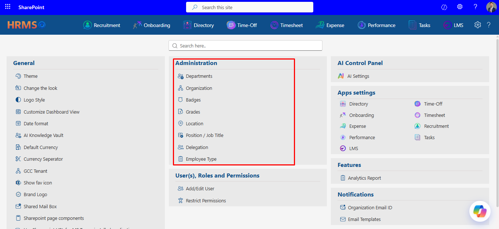
Welcome to the Engine Room
If HR365-HRMS were a ship, most people only ever see the deck — the dashboards, the leave requests, the shiny Praise posts. Administration is the engine room. It's where you define the departments people belong to, the grades that decide who reports to whom, the locations they clock in from, and the job titles on their business cards. Nothing here is glamorous, and that's exactly the point: get it right once, and every other module (Time-Off, Recruitment, Performance, Expense) quietly inherits the correct structure without anyone having to think about it again.
This guide walks through all eight Administration tiles — Departments, Organization, Badges, Grades, Location, Position / Job Title, Delegation, and Employee Type — in the order you'll find them on the Settings page. Each section explains what the feature does, how to use it, and (because we test these things so you don't have to find out the hard way) a few honest heads-ups about quirks worth knowing before you rely on them.
- Add — click the green “+ Add” button, give the department a name and an optional description, and decide whether it's Active. Simple in, simple out.
- Sync from M365 — the teal “Sync From M365” button pulls department data straight from your Microsoft 365 tenant, so you're not retyping what Azure AD already knows.
- Bulk actions — tick the checkboxes on multiple rows and use the Action menu to deactivate or delete several departments at once — handy during a reorg or when retiring legacy teams.
- Search & sort — the inline filter row under the header lets you search by department name or description without leaving the panel.
Departments
Where every employee officially “lives” on the org chart.
Departments are the first and most fundamental grouping in HR365-HRMS — Human Resources, Software Development, IT Services, and so on. Every employee record, every approval routing rule, and a good chunk of your reporting all key off this list, so it's worth keeping it tidy.
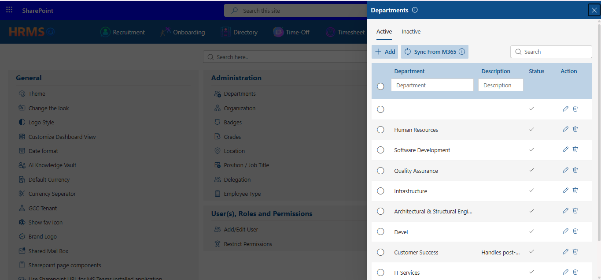
The Departments grid — already synced with a healthy list of teams.
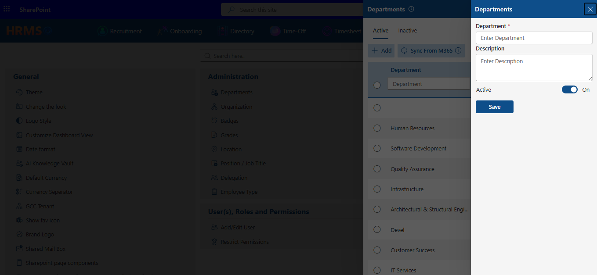
Adding a new department: name, description, and an Active switch.
- General — organization name, email, office location, country/s
- Bank Details — your primary banking information (account number, ABA/SWIFT/IBAN, bank address). Look for the “Intermediate Bank Details” link at the bottom of this tab — click it to expand a hidden sub-section for routing international wire transfers through a secondary/correspondent bank.
- Terms and Conditions — the legal terms tied to your organization record.
Organization
Your company's legal and banking identity, in one place.
This is the one setting almost everything else quietly depends on — especially Time-Off Manager, which pulls its default location and time zone logic from here. The Organization record holds your company's registration details, contact info, and banking information across three tabs.
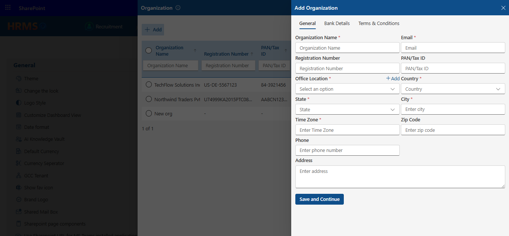
The General tab: legal name, contact info, and location — all required.
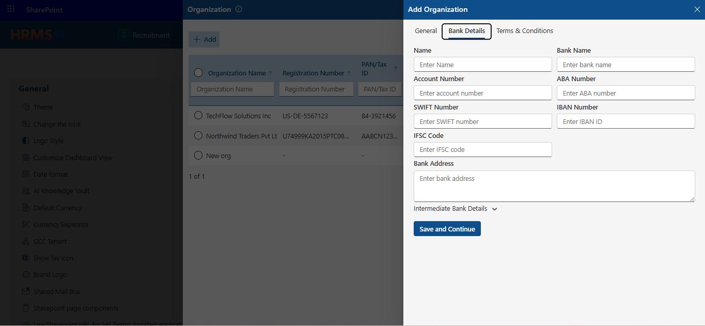
Bank Details, expanded to reveal the collapsible Intermediate Bank Details sub-section.
- Badge name & description — what the badge is called and what it recognizes.
- Active toggle — controls whether the badge can currently be awarded.
- Select badge icon — a required icon picker that's supposed to open a gallery of badge artwork to attach to the badge.
Badges
Digital “gold stars” for the Praise / recognition feature.
Badges are the little icons that show up when a colleague publicly praises someone in the recognition feed — think “Team Player”, “Above & Beyond”, or “First Ship.” Setting them up is meant to take three fields.
An empty Badges list — nothing has been created yet in this tenant.
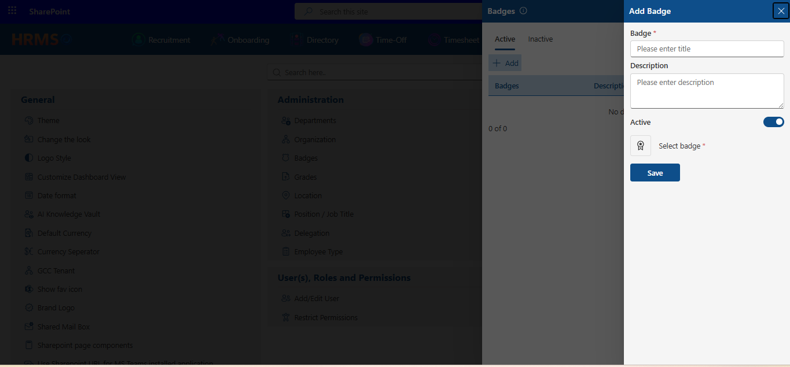
The Add Badge panel — note the required icon-picker button on the left.
- Add — type a grade name and save. That's the whole form.
- Save and Add More — uniquely among the Administration tiles, Grades offers this option so you can punch in L1, L2, L3, L4… back-to-back without reopening the panel each time. More modules should borrow this trick.
Grades
The levels behind the org chart — L1, L2, L3, and beyond.
Grades define seniority or compensation bands (Associate, Analyst, Senior Analyst, and so on). They're a quiet dependency for Time-Off Manager and Expense Tracker, both of which can use an employee's grade to apply different policy tiers.
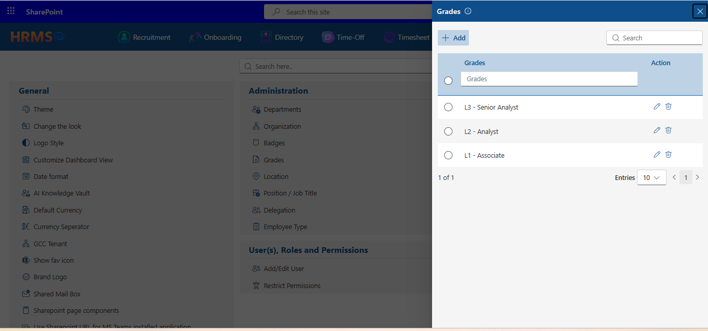
A simple, clean Grades list — exactly what this feature is meant to look like.
- Add / Edit — name, description, and an Active toggle, same pattern as Departments.
- Sync From M365 — pulls the latest location list from your Microsoft 365 directory.
- Work week table — a Monday–Sunday grid of expected working hours for that location, shown as five rows of hour values under the day columns.
Location
Every office, site, or remote hub your workforce clocks in from.
Location powers everything from directory filtering to (via the Work week table below) default working-hour expectations per site.
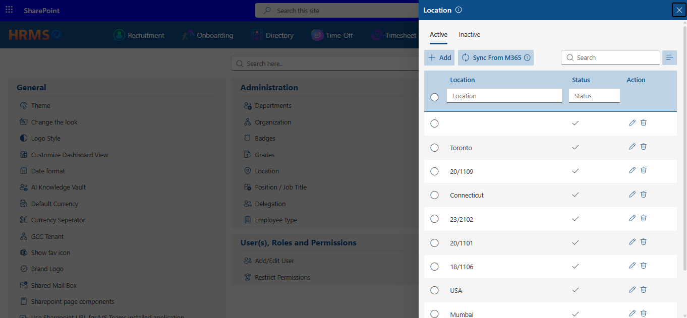
The Location grid, complete with a Sync From M365 shortcut for keeping it current.
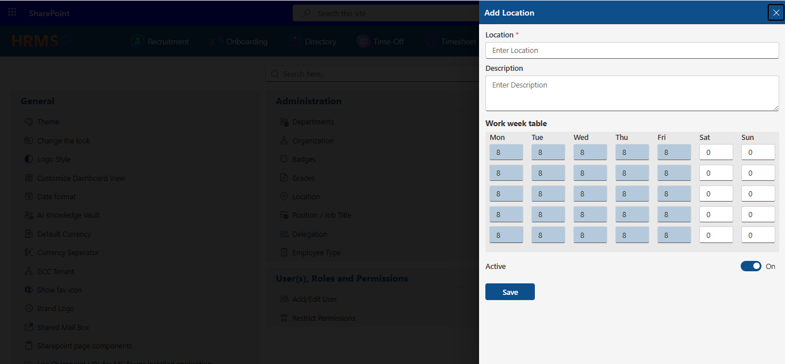
The Work week table on the Edit Location panel — five rows, currently unlabeled.
- Add — position name, an optional description, and Active status.
- Sync From M365 — keeps this list aligned with titles already defined in your Microsoft 365 directory.
Position / Job Title
The titles that show up on business cards, email signatures, and org charts.
This list feeds the job title field wherever it appears across HR365-HRMS employee profiles, the directory, recruitment requisitions, and more.
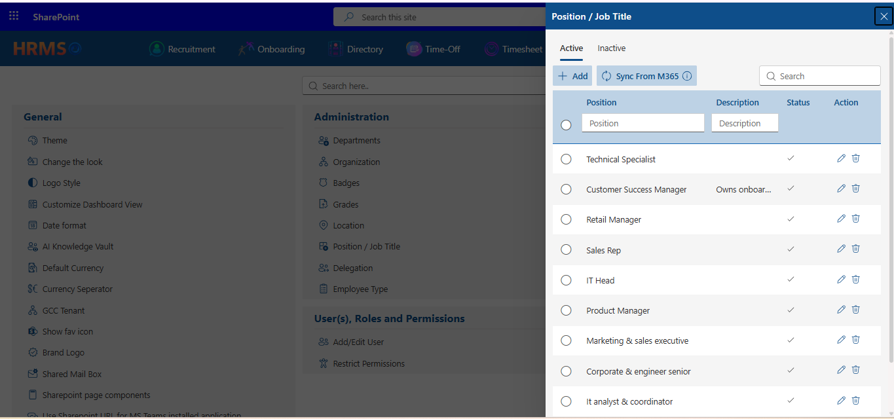
Position / Job Title grid — a healthy mix of synced and manually-added titles.
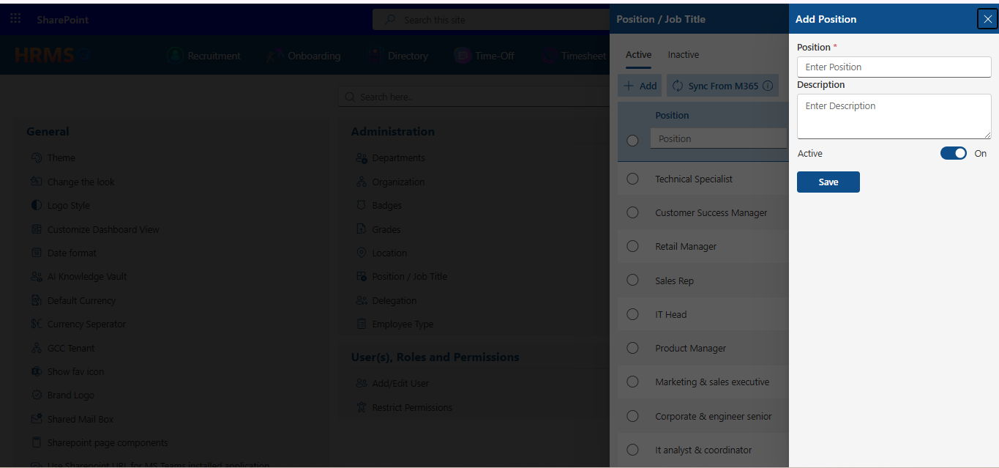
The Add Position form — deliberately minimal.
Correction from the previous guide
Positions do not currently link to a Department or Grade from within this form — the Add/Edit Position panel only has Position (name), Description, and Active. If your team needs department- or grade-specific job titles, that association has to be managed elsewhere (e.g., on the employee record itself) for now.
Delegation
Handing the keys to someone else while you're out — on your terms.
Delegation lets one person temporarily reassign their responsibilities in a specific app (Time-Off approvals, for example) to a delegatee, for a defined date range. Admins can set up a delegation for anyone; regular users can only delegate their own work.
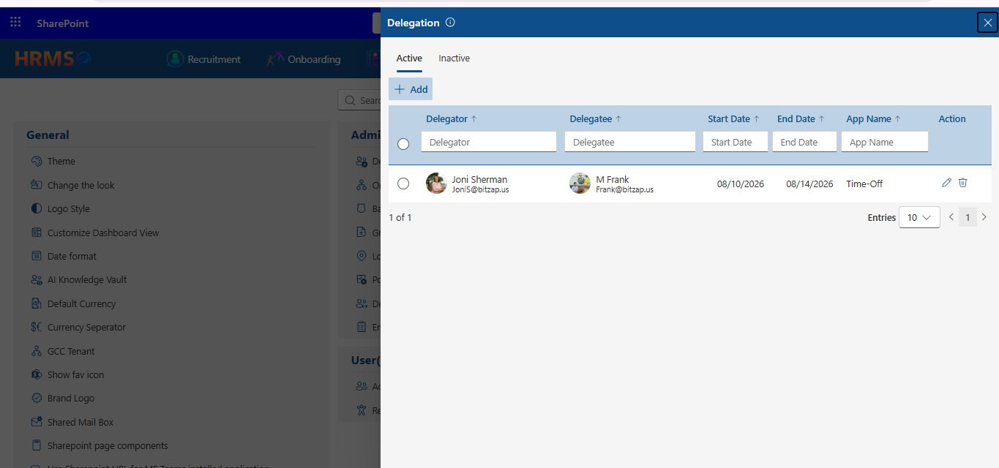
An active delegation: Joni Sherman handing off Time-Off duties to M Frank for a week.
- Delegator / Delegatee — pick who's handing off responsibilities and who's picking them up, from a searchable people picker.
- Start Date / End Date — the window during which the delegation is active.
- App Name — which application the delegation applies to (Time-Off, for example).
- Active toggle — lets you disable a delegation without deleting its history.
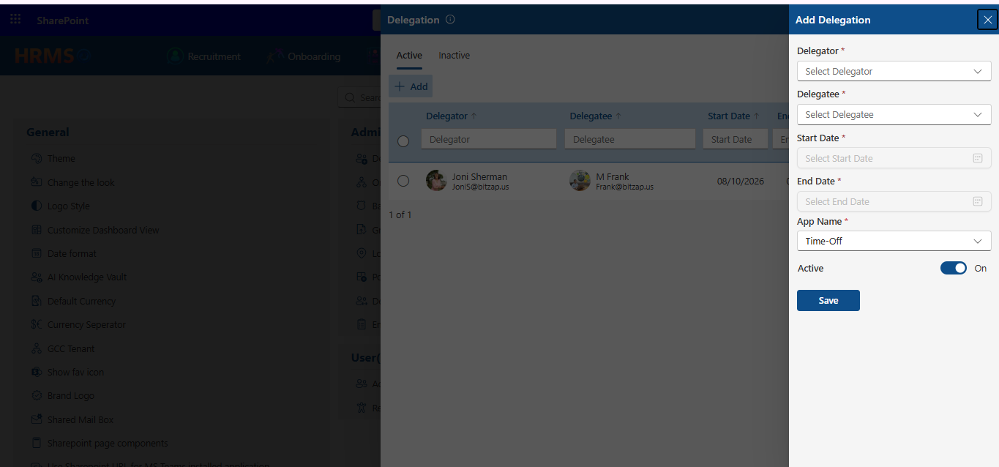
The Add Delegation form — delegator, delegatee, date range, and target app.
Employee Type
Full-Time, Part-Time, Contract — and whatever else your workforce needs.
Employee Type categorizes your workforce by engagement type. It's a short list, but it quietly affects eligibility rules in modules like Time-Off and Expense.
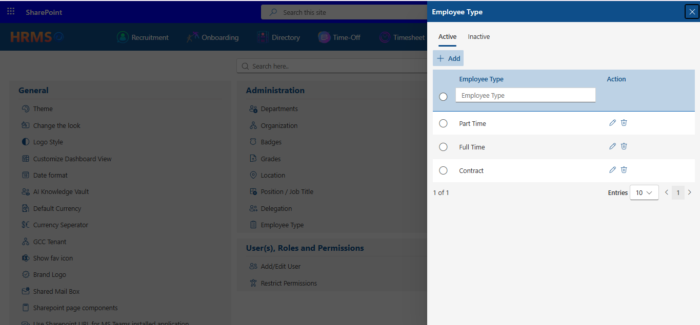
A clean, minimal Employee Type list — Part Time, Full Time, and Contract.
- Add / Edit — a name and an Active toggle. The Edit form correctly requires a name — you can't save a blank Employee Type today.
- Consistency — keep this list short and meaningful; it's typically referenced by policy logic elsewhere, so avoid near-duplicate entries like “Contractor” and “Contract.